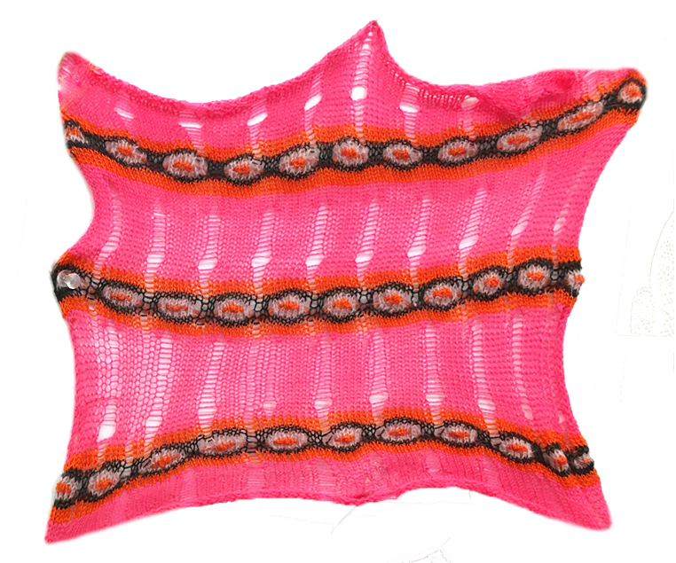
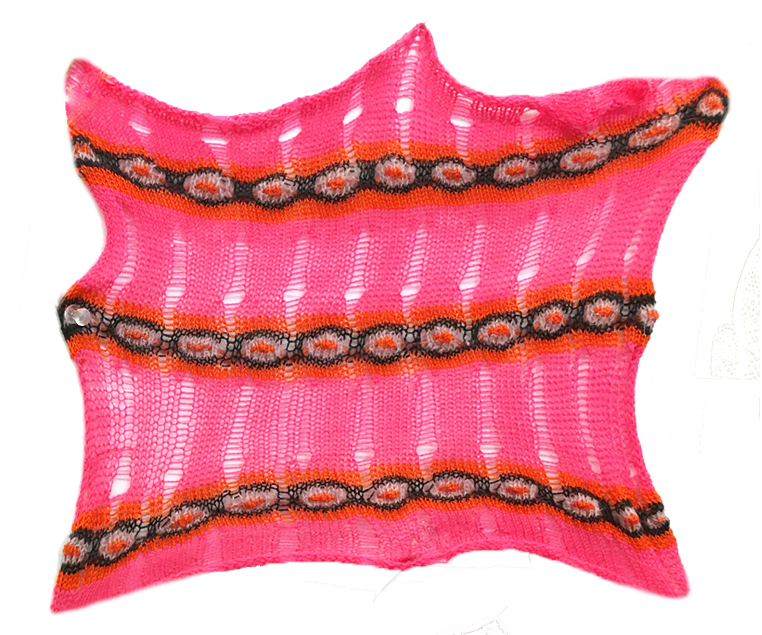
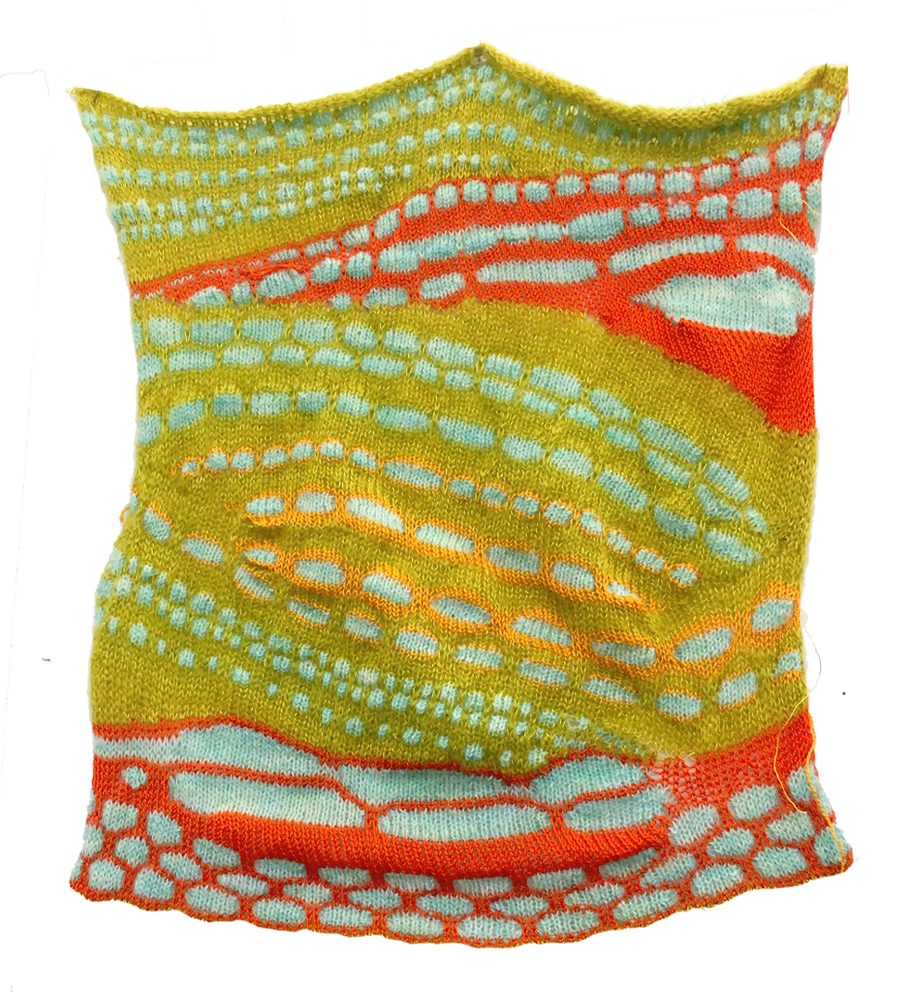
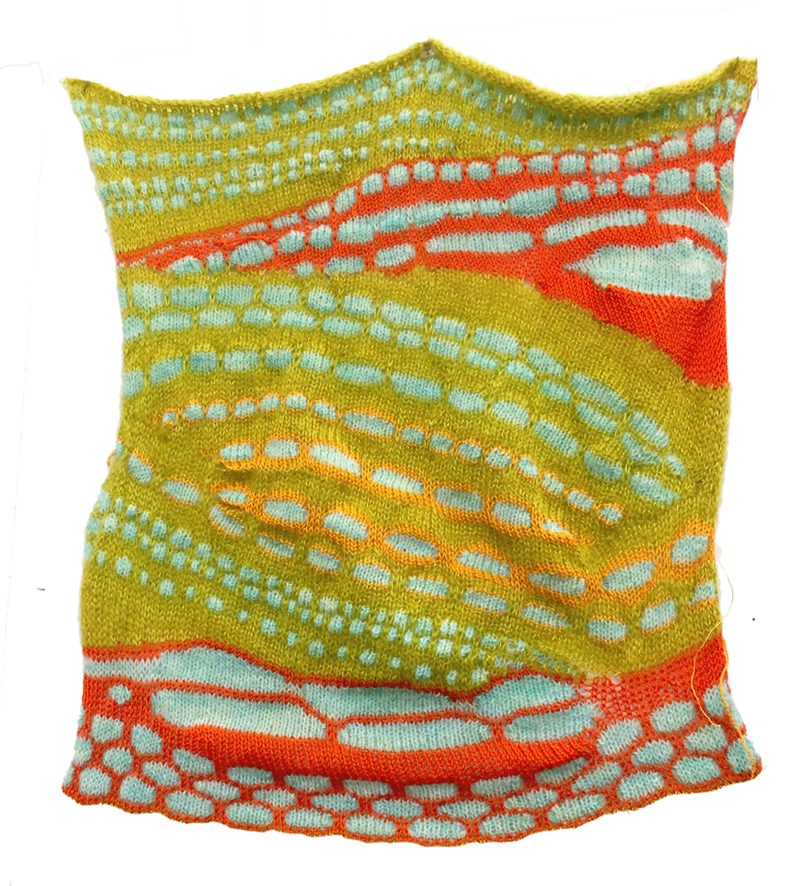
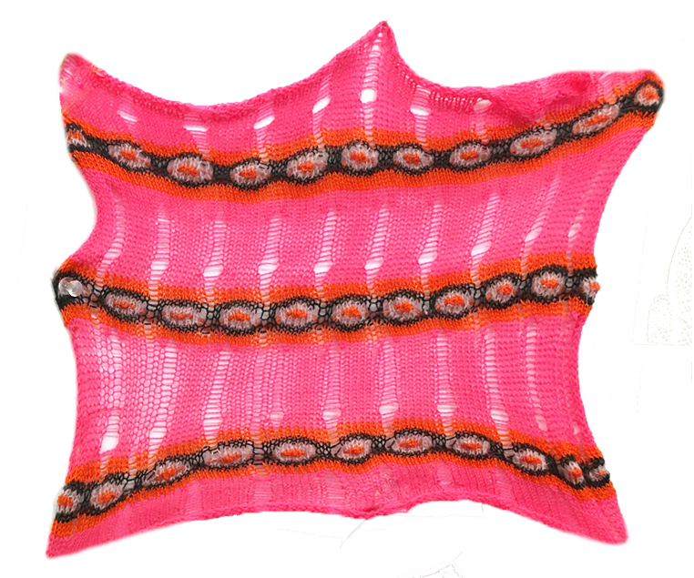
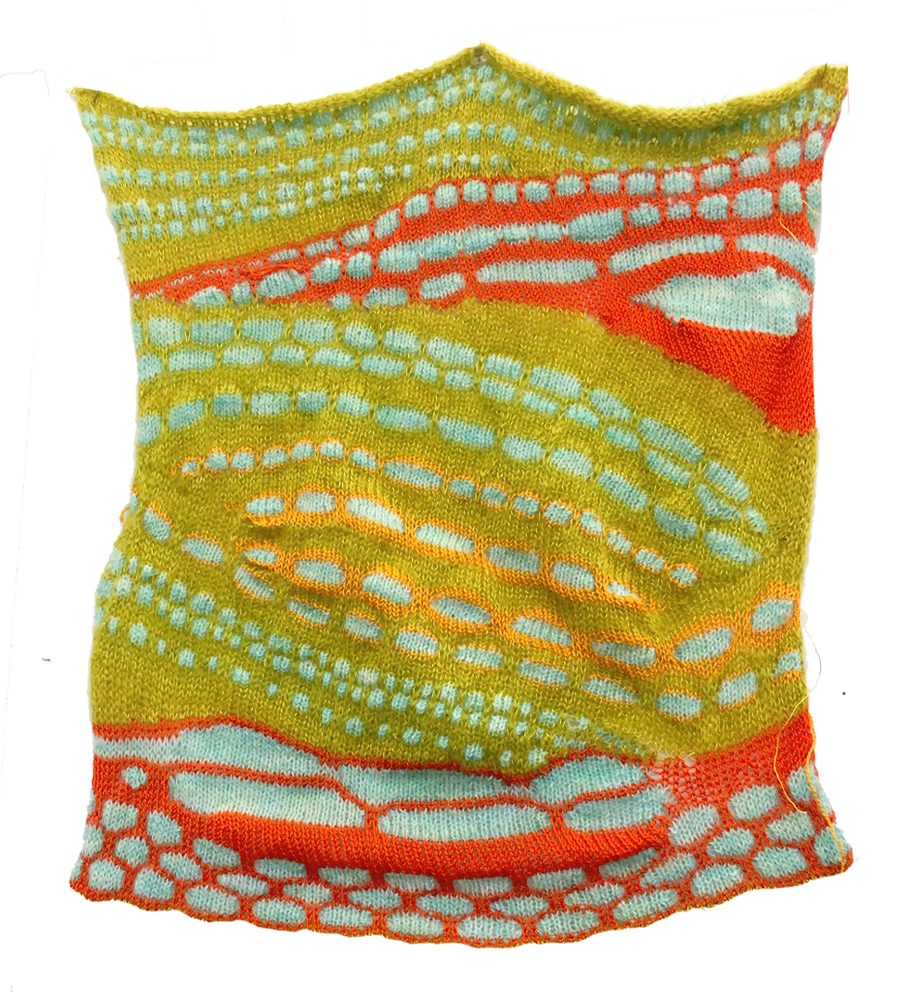

 



Passing On/2019
Collection of pieces knitted on a single-bed knitting machine. 'Passing on' derives from the Korean work "대물림", which alludes to childhood memories of wearing clothes that were passed down from my older sister and brothers. Although the clothes did not fit me perfectly, the sense of warmth still resonates with me, just as it did on the clothes.

